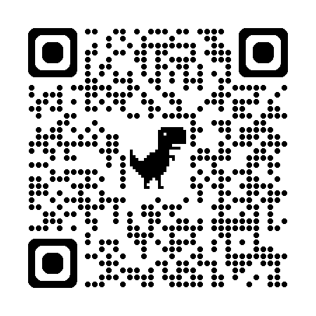

Scan to openNurses read unstructured clinical documents, synthesize the information, and make coverage decisions.
Leveraging AI to improve efficiency and unlock things I couldn't do before — I have the ideas, AI handles the execution gap.
UM ensures the right care, at the right time, in the right setting — using evidence-based criteria. The bottleneck is reading.
"Open MedCompass. Download 30 docs with identical names. Scan 200 pages. Most aren't searchable."
— Daily nurse workflow
Hot Link entry. CDST opens beside the case in a new viewer.
3–50 attachments per case. Identical names. Manual click each.
10–200 pages each. Many faxed PDFs aren't searchable — no copy/paste.
Vitals, labs, dates, meds — typed by hand into a 100-field form.
The hardest part isn't the AI.
It's the workflow, the interface, the trust.
Unstructured clinical documents → AI summary → nurse validates instead of transcribes.
All case docs · cross-doc search · zoom · citation
Pre-populates QuickBase · editable · 👍👎 feedback loop
Surface critical; let the clinician trim. Nurse always owns the answer.
"30 attachments on 1 case. Thank goodness for this tool."
"Did a great job pulling clinical from the doc, even though the fax was not clear."
Baseline (Jan–Apr '26): 460 👍 / 439 👎 from 268 unique cases.
Same principle as CDST — AI accelerates, I decide.
BigQuery pulls, feedback bucketing, edit-pattern detection. AI does the heavy lifting; I bring the hypothesis.
From CSV to a stakeholder-ready deck in one prompt. No designer, no template wrestling.
Streamlit dashboards, prototypes. Ship a feedback dashboard in a day instead of a sprint.
Excel trackers, Word reports, FRDs, mock UIs, architecture diagrams — the plumbing every PM owes their team.
Daily digest in my inbox. Pipeline status, feedback delta, what shipped, what broke — auto-summarized while I sleep.
Zero tickets filed. Zero meetings about meetings. If I can describe the problem clearly, I can ship something that day.